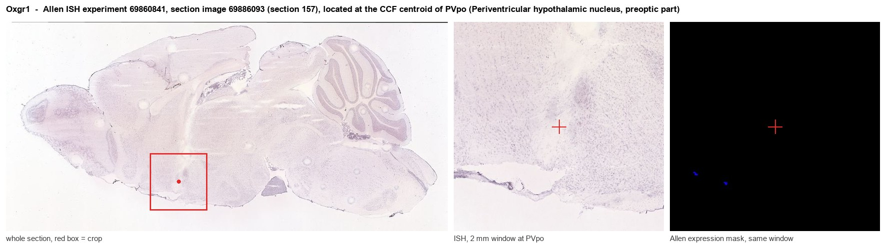
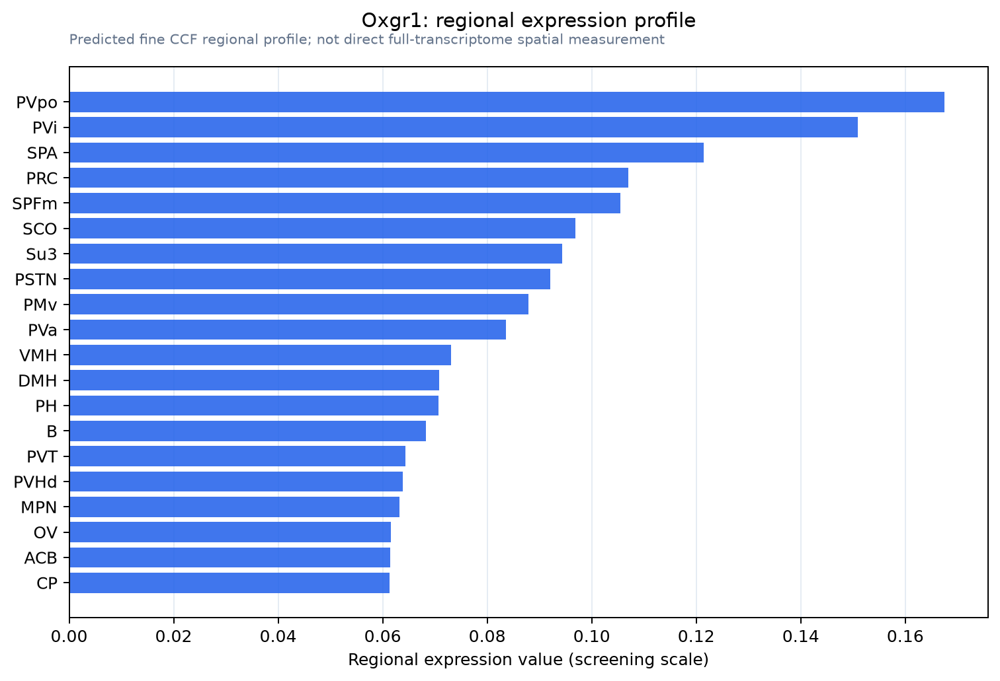

Oxgr1
2-oxoglutarate receptor 1 (Alpha-ketoglutarate receptor 1) (G protein-coupled receptor 99)
Spatial tier: REGION_BIASED · Class: GPCR · Top region: PVpo (Periventricular hypothalamic nucleus, preoptic part) · Positive regions: 30/554
Function in PVpo: evidence, prediction, innovation
- Gene function
- OXGR1 (GPR99) is a Gq-coupled G protein-coupled receptor activated by the TCA-cycle intermediate 2-oxoglutarate (alpha-ketoglutarate) and by the inflammatory lipid leukotriene E4, which is why it is also called CysLT3. Activation raises intracellular calcium; the receptor is best characterised in kidney, where it couples metabolic state to acid-base and salt handling, and in airway epithelium.
- Region function
- The preoptic part of the periventricular hypothalamic nucleus is a thin periventricular cell group containing neuroendocrine and sleep-related neurons; it contributes to hypophysiotropic control (somatostatin, GHRH, dopamine) and to preoptic regulation of sleep and body temperature.
- Published in this region
- inferred No region-specific literature found. The closest evidence is that OXGR1 is a genuine neural receptor elsewhere: Cherif 2018 showed GPR91 and GPR99 signalling promotes retinal axon growth, and Diehl 2016 mapped GPR99 protein across murine organs including neural tissue, while structural work (Liu 2025) confirms its dual metabolite/leukotriene pharmacology.
- Predicted function
- Prediction: in the periventricular preoptic nucleus, which sits next to the third ventricle and samples CSF, OXGR1 would let neurons read extracellular alpha-ketoglutarate as a direct metabolic signal and depolarise through Gq, linking systemic energy or acid-base state to neuroendocrine and thermoregulatory output. Intracerebroventricular alpha-ketoglutarate should activate these neurons and shift GH/somatostatin release or body temperature, and Oxgr1 knockout is predicted to blunt metabolic-challenge-evoked changes in preoptic activity and thermoregulatory responses to fasting.
- Innovation
- ★★★★★ 5/5 A metabolite-sensing GPCR positioned on the CSF-facing preoptic wall is an obvious but wholly untested route for direct metabolic sensing by neuroendocrine neurons.
- Tools
- Oxgr1 knockout mice; alpha-ketoglutarate and LTE4 as agonists; montelukast-insensitive CysLT3 pharmacology plus newly reported OXGR1-selective ligands; anti-OXGR1 antibodies; periventricular targeting via Sst-Cre or Ghrh-Cre crosses.
- References
Direct evidence located at the region

Allen ISH experiment 69860841, section image 69886093 (section 157): the section that contains the CCF centroid of Periventricular hypothalamic nucleus, preoptic part according to the Allen image-to-atlas alignment (reference_to_image), with a 2 mm window around that point. Left: whole section, red box = window. Middle: ISH signal. Right: Allen's expression-mask view of the same window. open this image in the Allen viewer
Direct spatial evidence

Regional expression figure

Predicted WMB × fine-CCF profile; not direct full-transcriptome spatial measurement.
Spatial profile
Evidence and specificity
- Evidence status
- PREDICTED_FINE
- Direct sources
- None; predicted localization only
- Exclusive threshold
- 12 positive regions out of 554
- Spatial specificity
- 0.297
- Top-region fraction
- 0.051
- Filter status
- PASS
Interpretation limits
- Cell-type-to-region projection is imputed expression, not direct spatial measurement.
- Adult reference atlases do not establish stability across age, sex, strain, state, or disease.
- Transcript abundance does not guarantee protein abundance or genetic-tool performance.